Game of Life#
Examples and exercises for the tutorial Complexity Science, based on Think Complexity, 2nd edition.
Click here to run this notebook on Colab. For the exercises, use the version with blanks.
import numpy as np
import matplotlib.pyplot as plt
import seaborn as sns
np.set_printoptions(legacy='1.25')
The following class implements the Game of Life.
from scipy.signal import correlate2d
from time import sleep
from IPython.display import clear_output
class Life:
"""Implementation of Conway's Game of Life."""
kernel = np.array([[1, 1, 1],
[1,10, 1],
[1, 1, 1]])
table = np.zeros(20, dtype=np.uint8)
table[[3, 12, 13]] = 1
def __init__(self, n, m=None):
"""Initializes the attributes.
n: number of rows
m: number of columns
"""
m = n if m is None else m
self.grid = np.zeros((n, m), np.uint8)
def add_cells(self, row, col, *strings):
"""Adds cells at the given location.
row: top row index
col: left col index
strings: list of strings of 0s and 1s
"""
for i, s in enumerate(strings):
self.grid[row+i, col:col+len(s)] = np.array([int(b) for b in s])
def step(self):
"""Executes one time step."""
c = correlate2d(self.grid, self.kernel, mode='same')
self.grid = self.table[c]
def draw(self):
"""Draws the cells."""
a = self.grid
n, m = a.shape
plt.axis([0, m, 0, n])
plt.xticks([])
plt.yticks([])
cmap = plt.get_cmap('Greens')
options = dict(interpolation='nearest', alpha=0.8,
vmin=0, vmax=1, origin='upper')
options['extent'] = [0, m, 0, n]
self.im = plt.imshow(a, cmap, **options)
def animate(self, frames, interval=None):
"""Animate the automaton.
frames: number of frames to draw
interval: time between frames in seconds
"""
plt.figure()
try:
for i in range(frames-1):
self.draw()
plt.show()
if interval:
sleep(interval)
self.step()
clear_output(wait=True)
self.draw()
plt.show()
except KeyboardInterrupt:
pass
The following function creates a Life object and sets the initial condition using strings of 0 and 1 characters.
def make_life(n, m, row, col, *strings):
"""Makes a Life object.
n, m: rows and columns of the Life array
row, col: upper left coordinate of the cells to be added
strings: list of strings of '0' and '1'
"""
life = Life(n, m)
life.add_cells(row, col, *strings)
return life
Game of Life entities#
Under GoL rules, some configurations are stable, meaning that they don’t change from one time step to the next. These patterns are sometimes called “still lifes”.
One example is a “beehive”, which is the following pattern of 6 cells.
# beehive
life = make_life(3, 4, 0, 0, '0110', '1001', '0110')
life.draw()
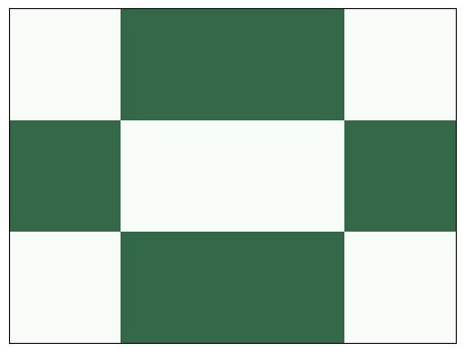
Here’s what it looks like after one step:
life.step()
life.draw()
Some patterns, called “oscillators”, cycle through a series of configurations that returns to the initial configuration and repeats.
A “toad” is an oscillator with period 2. Here are its two configurations:
# toad
plt.subplot(1, 2, 1)
life = make_life(4, 4, 1, 0, '0111', '1110')
life.draw()
plt.subplot(1, 2, 2)
life.step()
life.draw()
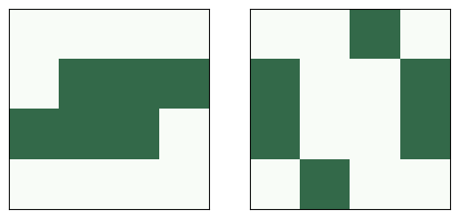
Here’s what it looks like as an animation.
life.step()
life.animate(frames=4, interval=0.5)
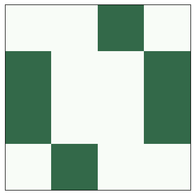
Some patterns repeat, but after each cycle, they are offset in space. They are called “spaceships”.
A “glider” is a spaceship that translates one unit down and to the right with period 4.
# glider
glider = ['010', '001', '111']
life = make_life(4, 4, 0, 0, *glider)
plt.figure(figsize=(12,5))
for i in range(1, 6):
plt.subplot(1, 5, i)
life.draw()
life.step()
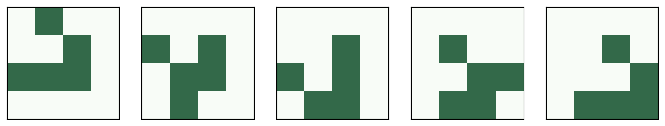
Here’s an animation showing glider movement.
life = make_life(10, 10, 0, 0, '010', '001', '111')
life.animate(frames=32, interval=0.2)
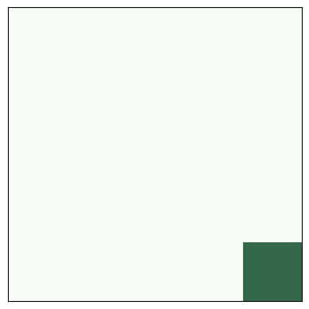
Exercise: If you start GoL from a random configuration, it usually runs chaotically for a while and then settles into stable patterns that include blinkers, blocks, beehives, ships, boats, and loaves.
For a list of common “naturally” occurring patterns, see Achim Flammenkamp, “Most seen natural occurring ash objects in Game of Life”.
Start GoL in a random state and run it until it stabilizes (try 1000 steps). What stable patterns can you identify?
Hint: use numpy.random.randint.
# Solution
n = 100
life = Life(n)
life.grid = np.random.randint(2, size=(n, n), dtype=np.uint8)
life.animate(frames=1000)
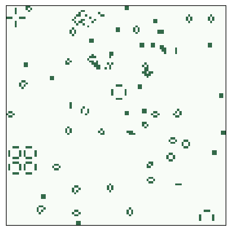
Methuselahs#
Most initial conditions run for a short time and reach a steady state. But some initial conditions run for a surprisingly long time; they are called Methuselahs.
One of the simplest examples is the “r-pentomino”, which starts with only five live cells, but it runs for 1103 steps before stabilizing.
# r pentomino
rpent = ['011', '110', '010']
life = make_life(3, 3, 0, 0, *rpent)
life.draw()
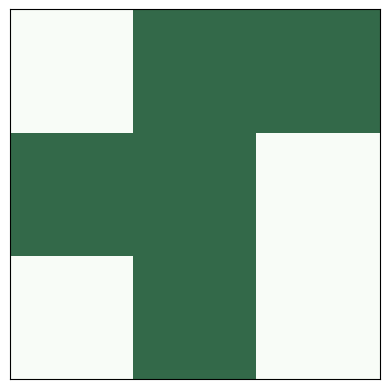
Here are the start and finish configurations.
# r pentomino
rpent = ['011', '110', '010']
plt.subplot(1, 2, 1)
life = make_life(120, 120, 50, 45, *rpent)
life.draw()
for i in range(1103):
life.step()
plt.subplot(1, 2, 2)
life.draw()
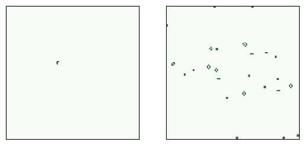
And here’s the animation that shows the steps.
life = make_life(120, 120, 50, 45, *rpent)
life.animate(frames=1200)
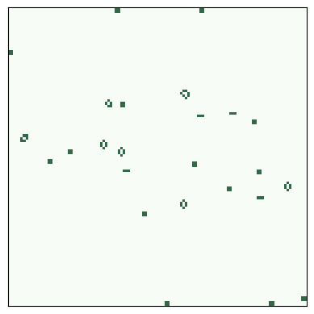
Rabbits#
Another example is rabbits, which starts with only nine cells and runs 17331 steps before reaching steady state.
from os.path import basename, exists
def download(url):
filename = basename(url)
if not exists(filename):
from urllib.request import urlretrieve
local, _ = urlretrieve(url, filename)
print('Downloaded ' + local)
download('https://github.com/AllenDowney/ComplexityScience/raw/master/Cell2D.py')
download('https://github.com/AllenDowney/ComplexityScience/raw/master/Life.py')
download('https://github.com/AllenDowney/ComplexityScience/raw/master/LifeRabbits.py')
Downloaded Cell2D.py
Downloaded Life.py
Downloaded LifeRabbits.py
To run my implementation of rabbits, open a terminal and run
python LifeRabbits.py
This needs a local installation of Python; it doesn’t work on Colab.
Conway’s conjecture#
Patterns like these prompted Conway to conjecture, as a challenge, that there are no initial conditions where the number of live cells grows unboundedly.
Gosper’s glider gun was the first entity to be discovered that produces an unbounded number of live cells, which refutes Conway’s conjecture.
glider_gun = [
'000000000000000000000000100000000000',
'000000000000000000000010100000000000',
'000000000000110000001100000000000011',
'000000000001000100001100000000000011',
'110000000010000010001100000000000000',
'110000000010001011000010100000000000',
'000000000010000010000000100000000000',
'000000000001000100000000000000000000',
'000000000000110000000000000000000000'
]
Here’s the initial configuration:
life = make_life(11, 38, 1, 1, *glider_gun)
life.draw()
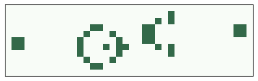
And here’s what it looks like running:
life = make_life(50, 50, 2, 2, *glider_gun)
life.animate(frames=500)
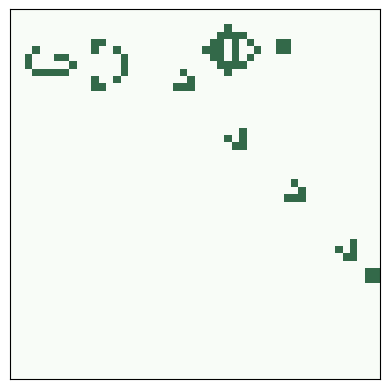
Exercise: In this animation, you might notice that the boundary interferes with the escaping gliders, but it doesn’t affect the behavior of the gun.
For fun, change step so it passes the keywords boundary='wrap' to correlate2d, and see what happens.
Don’t forget to remove it before you proceed.
Puffer train#
Another way to “refute” Conway’s conjecture is a puffer train.
download('https://github.com/AllenDowney/ComplexityScience/raw/master/LifePuffer.py')
Downloaded LifePuffer.py
To see a puffer train run, open a terminal and run
python LifePuffer.py
This needs a local installation of Python; it doesn’t work on Colab.
Implementing Game of Life#
This section explains how the implementation we’ve been using works.
As an example, I’ll start with an array of random cells:
a = np.random.randint(2, size=(10, 10), dtype=np.uint8)
print(a)
[[1 0 1 1 1 0 0 0 0 1]
[0 1 1 1 0 1 0 0 1 1]
[1 1 1 1 0 1 0 1 0 1]
[0 1 0 0 1 0 1 0 0 1]
[0 0 1 0 1 1 0 1 1 0]
[0 0 0 1 1 1 0 1 1 0]
[0 0 1 1 0 1 1 0 0 1]
[1 0 0 1 1 1 0 0 0 1]
[1 0 1 0 1 0 1 1 0 0]
[1 1 0 0 1 0 0 1 0 1]]
The following is a straightforward translation of the GoL rules using for loops and array slicing.
b = np.zeros_like(a)
rows, cols = a.shape
for i in range(1, rows-1):
for j in range(1, cols-1):
state = a[i, j]
neighbors = a[i-1:i+2, j-1:j+2]
k = np.sum(neighbors) - state
if state:
if k==2 or k==3:
b[i, j] = 1
else:
if k == 3:
b[i, j] = 1
print(b)
[[0 0 0 0 0 0 0 0 0 0]
[0 0 0 0 0 1 1 0 0 0]
[0 0 0 0 0 1 0 1 0 0]
[0 0 0 0 0 0 0 0 0 0]
[0 0 1 0 0 0 0 0 0 0]
[0 0 0 0 0 0 0 0 0 0]
[0 0 1 0 0 0 0 1 0 0]
[0 0 0 0 0 0 0 1 1 0]
[0 0 1 0 0 0 1 1 0 0]
[0 0 0 0 0 0 0 0 0 0]]
Here’s a smaller, faster version using cross correlation.
from scipy.signal import correlate2d
kernel = np.array([[1, 1, 1],
[1, 0, 1],
[1, 1, 1]])
c = correlate2d(a, kernel, mode='same')
b = (c==3) | (c==2) & a
b = b.astype(np.uint8)
print(b)
[[0 0 0 0 1 0 0 0 1 1]
[0 0 0 0 0 1 1 0 0 1]
[1 0 0 0 0 1 0 1 0 1]
[1 0 0 0 0 0 0 0 0 1]
[0 0 1 0 0 0 0 0 0 1]
[0 0 0 0 0 0 0 0 0 1]
[0 0 1 0 0 0 0 1 0 1]
[0 0 0 0 0 0 0 1 1 0]
[1 0 1 0 0 0 1 1 0 0]
[1 1 0 1 0 1 1 1 1 0]]
Using a kernel that gives a weight of 10 to the center cell, we can simplify the logic a little.
kernel = np.array([[1, 1, 1],
[1,10, 1],
[1, 1, 1]])
c = correlate2d(a, kernel, mode='same')
b = (c==3) | (c==12) | (c==13)
b = b.astype(np.uint8)
print(b)
[[0 0 0 0 1 0 0 0 1 1]
[0 0 0 0 0 1 1 0 0 1]
[1 0 0 0 0 1 0 1 0 1]
[1 0 0 0 0 0 0 0 0 1]
[0 0 1 0 0 0 0 0 0 1]
[0 0 0 0 0 0 0 0 0 1]
[0 0 1 0 0 0 0 1 0 1]
[0 0 0 0 0 0 0 1 1 0]
[1 0 1 0 0 0 1 1 0 0]
[1 1 0 1 0 1 1 1 1 0]]
More importantly, the second version of the kernel makes it possible to use a lookup table to get the next state, which is faster and even more concise.
table = np.zeros(20, dtype=np.uint8)
table[[3, 12, 13]] = 1
c = correlate2d(a, kernel, mode='same')
b = table[c]
print(b)
[[0 0 0 0 1 0 0 0 1 1]
[0 0 0 0 0 1 1 0 0 1]
[1 0 0 0 0 1 0 1 0 1]
[1 0 0 0 0 0 0 0 0 1]
[0 0 1 0 0 0 0 0 0 1]
[0 0 0 0 0 0 0 0 0 1]
[0 0 1 0 0 0 0 1 0 1]
[0 0 0 0 0 0 0 1 1 0]
[1 0 1 0 0 0 1 1 0 0]
[1 1 0 1 0 1 1 1 1 0]]
Highlife#
One variation of GoL, called “Highlife”, has the same rules as GoL, plus one additional rule: a dead cell with 6 neighbors comes to life.
You can try out different rules by inheriting from Life and changing the lookup table.
Exercise: Modify the table below to add the new rule.
# Starter code
class MyLife(Life):
"""Implementation of Life."""
table = np.zeros(20, dtype=np.uint8)
table[[3, 12, 13]] = 1
One of the more interesting patterns in Highlife is the replicator, which has the following initial configuration.
replicator = [
'00111',
'01001',
'10001',
'10010',
'11100'
]
Make a MyLife object with n=100 and use add_cells to put a replicator near the middle.
Make an animation with about 200 frames and see how it behaves.
# Solution
n = 100
life = MyLife(n)
life.add_cells(n//2, n//2, *replicator)
life.animate(frames=200)
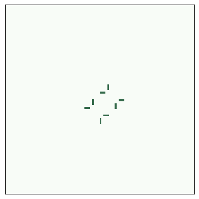
Exercise: Try out some other rules and see what kind of behavior you get.
Copyright 2019–2026 Allen Downey
Code license: MIT License
Text license: Creative Commons Attribution-NonCommercial-ShareAlike 4.0 International